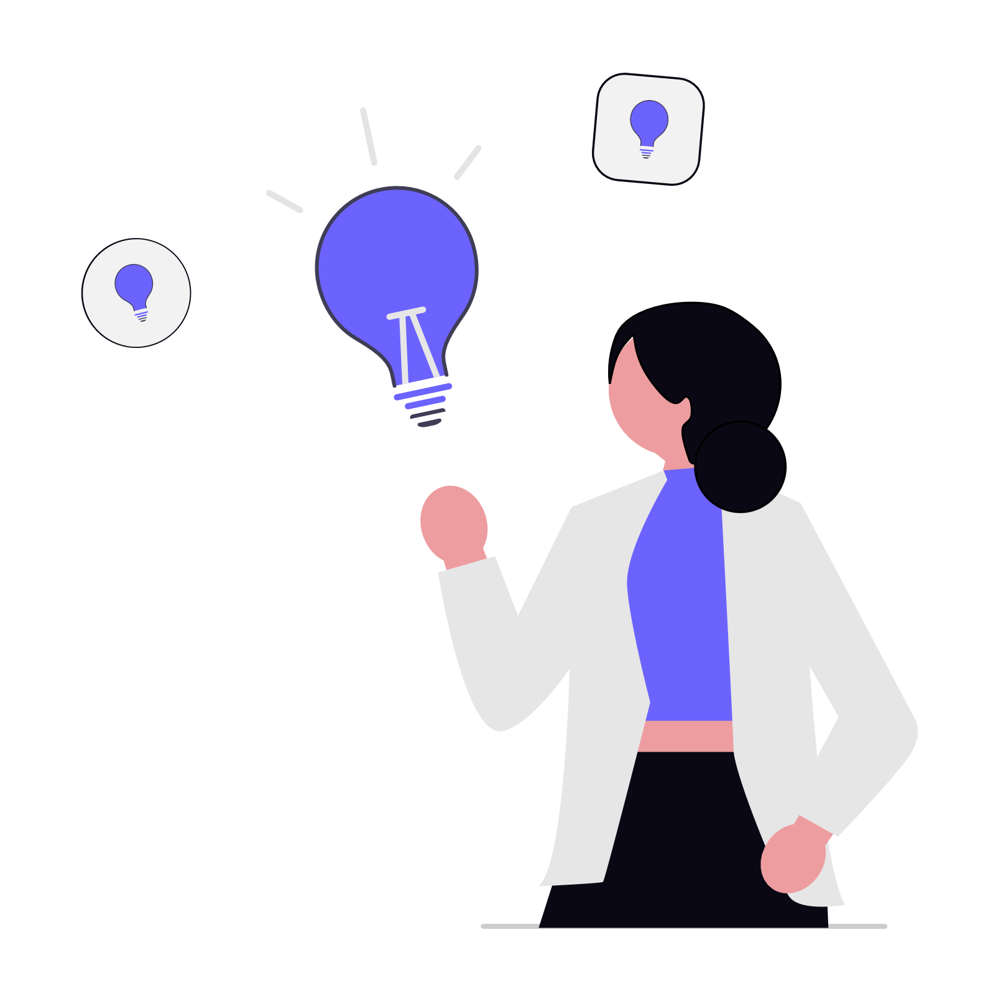
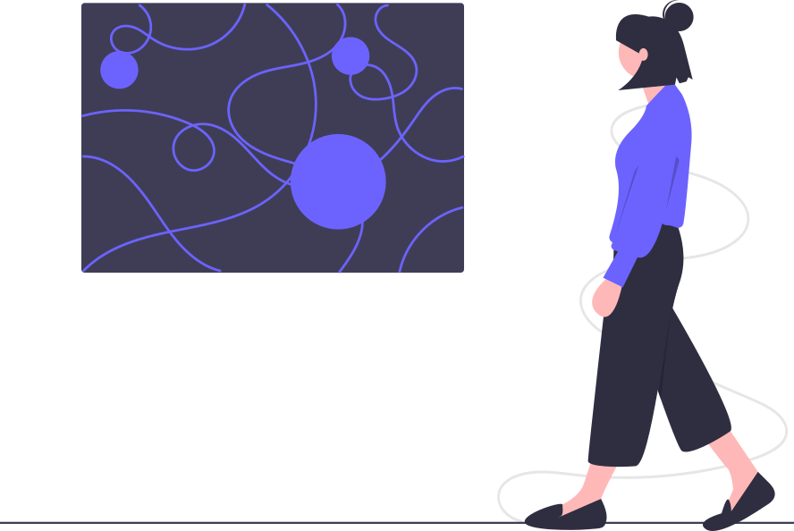
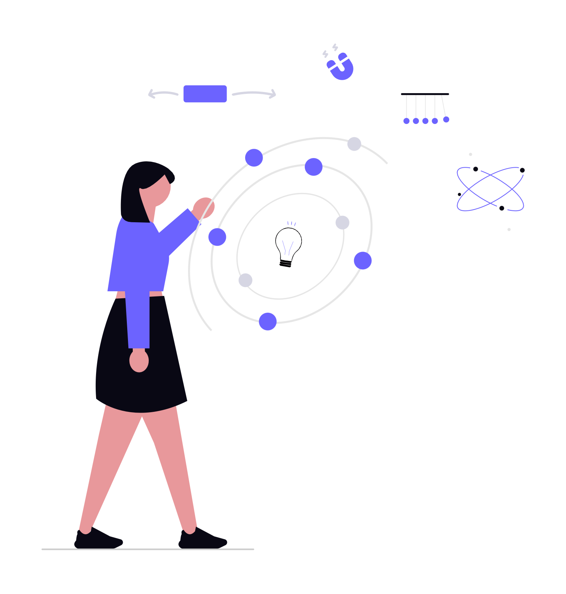
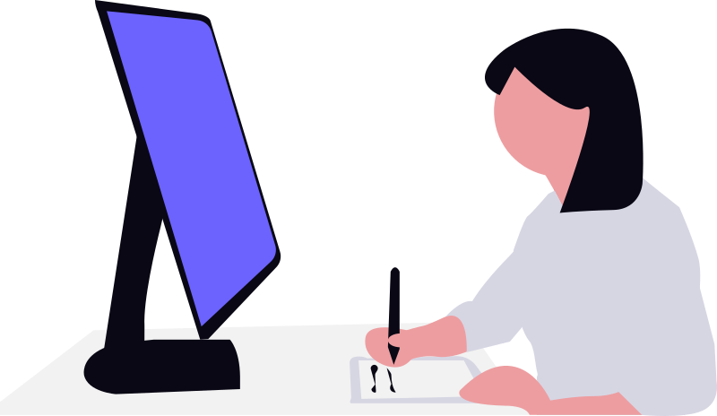

Diseño de interacción
¿Qué es?

📌 Definición
El diseño de interacción es una disciplina del diseño que se enfoca en cómo las personas interactúan con productos digitales, como páginas web, aplicaciones o dispositivos, buscando que estas interacciones sean intuitivas, eficientes y significativas. En otras palabras, se trata de planear qué sucede cuando un usuario realiza una acción, como hacer clic en un botón, deslizar una pantalla o navegar entre diferentes secciones.

📖 Storytelling
Imagina a un niño con un juguete lleno de botones: cada uno tiene un color diferente y está representado por un ícono. Pero surge una pregunta clave: ¿qué pasa cuando oprime cada botón? ¿El juguete emite sonidos? ¿Se mueve alguna parte? ¿Hay luces o alguna reacción visual? ¿Qué experiencia obtiene el niño al interactuar con él?
Ahora, lleva esta misma idea al entorno digital. Cuando entras a una página web, la información no siempre está visible al 100%. En su lugar, existen elementos como: barras de menú, botones, íconos y enlaces. Estos funcionan como conectores de interacción.
Por ejemplo, imagina un botón que dice “Galería”. Al hacer clic en él, te dirige a una sección con fotos o videos. Aunque parece una acción simple, en realidad es el resultado de un diseño de interacción previamente planeado, donde se define qué acción realizará el usuario, qué respuesta dará el sistema y cómo se sentirá la experiencia. Todo esto forma parte de un flujo de interacción, es decir, la secuencia de pasos que sigue un usuario para lograr un objetivo dentro de un sistema.
⚡ Elementos clave del diseño de interacción
El diseño de interacción considera varios componentes importantes:
- Acciones del usuario: lo que el usuario hace (clic, tocar, escribir).
- Respuestas del sistema: lo que ocurre después de cada acción.
- Flujo de navegación: cómo se mueve el usuario dentro del sistema.
- Retroalimentación (feedback): señales visuales, sonoras o táctiles que indican que una acción se realizó correctamente.

🚀 Importancia
Un buen diseño de interacción:
- Facilita el uso de productos digitales.
- Mejora la experiencia del usuario.
- Reduce errores y confusión.
- Hace que la navegación sea clara y agradable.

🎓 Conclusión
En conclusión, el diseño de interacción no solo define cómo se ve una interfaz, sino cómo se siente usarla.